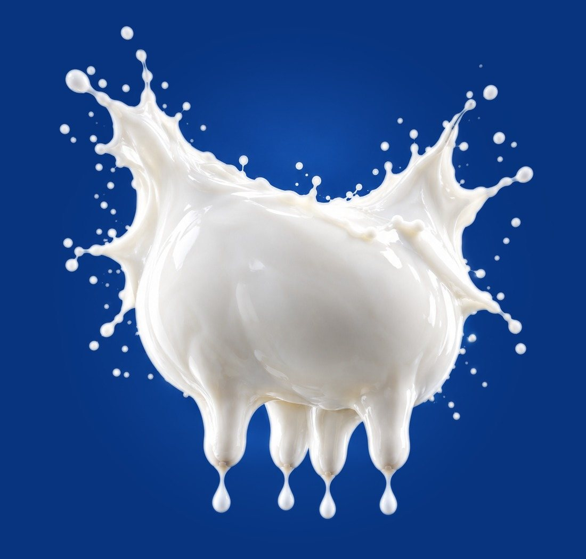

Mattinata sulla sanità della mammella
Parte tutto
da qui.
Prevenire le infezioni mammarie significa gettare le basi delle performance della mandria: produzione, qualità del latte e longevità delle vacche partono da qui.
Venerdì 4 dicembre · ore 9:30
Ristorante Dai Gelosi · Quinto Vicentino (VI)
Iscriviti gratis
Gratuito, massimo 50 posti. Iscrizione richiesta per motivi organizzativi e di biosicurezza.